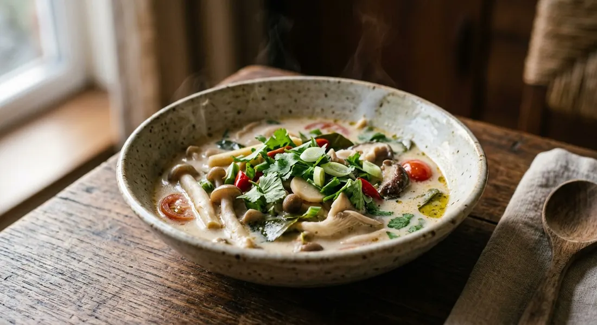

Mixed mushrooms simmered in coconut milk with toasted galangal, lemongrass and kaffir lime — tom kha's vegetarian form, the soup Thai cooks make for the je festival and the one that lets the galangal do the talking.

ต้มข่าเห็ด reads like a recipe in three words: ต้ม (tom) is boiled, ข่า (kha) is galangal, เห็ด (hed) is mushroom. The galangal is the one ingredient you cannot swap — swap the herb and the soup loses its name — while the mushroom part is famously flexible. Thai cooks list whatever the market has: straw, oyster, king oyster, wood ear, enoki, shiitake, or all of them at once.
Unlike its famous sibling ต้มข่าไก่ (tom kha gai), the mushroom version barely appears on restaurant menus — it is overwhelmingly a home dish, and overwhelmingly a เจ (je) one. Almost every Thai recipe for it comes framed as festival food: the Pantip auntie posts hers during เทศกาลกินเจ, the nine-day vegetarian festival, and calls her two-mushroom pot ต้มข่าเห็ดสองเกลอ — "the two mates" — because it uses oyster and king oyster mushrooms. Wongnai's version swaps chicken for three mushrooms and sheets of โปรตีนเกษตร (textured soy protein), keeping the body of the soup without the meat. Kapook notes the same door both ways: tom kha takes chicken, pork, fish, prawns — or none of them, made เจ with mushrooms only.
The taste the Pantip cook describes is the target: salty first, sweet following, and only a whisper of sour from lime to cut the rich coconut — with the mushrooms giving a texture no chicken can, crisp and springy by turns. Her version is served over hot rice; the mushroom soup is both broth and topping.
| Thai | English | Amount |
|---|---|---|
| ข่า | Galangal, sliced | 6 slices |
| ตะไคร้ (หั่นท่อน) | Lemongrass, cut | 2 stalks |
| ใบมะกรูด | Kaffir lime leaves | 4 |
| พริกจินดา | Bird's eye chillies | 5 |
| น้ำมันพืช | Vegetable oil | 1 tbsp |
| พริกแห้ง | Dried chillies | 5 |
| กะทิ | Coconut milk | 350 ml |
| น้ำมะพร้าว | Coconut water | 200 ml |
| เกลือ | Salt | 1½ tsp |
| น้ำตาลทราย | Sugar | 1 tsp |
| น้ำมะขามเปียก | Tamarind paste | 1 tbsp |
| เห็ดนางฟ้า | Oyster mushrooms | 60 g |
| เห็ดออรินจิ | King oyster mushrooms | 60 g |
| เห็ดหูหนู | Wood ear mushrooms | 60 g |
| ยอดมะพร้าวอ่อน | Young coconut shoot | 100 g |
| เห็ดเข็มทอง | Enoki mushrooms | 60 g |
| น้ำมะนาว | Lime juice | 1 tbsp |
The two-mates pot (Pantip): 200 g oyster mushrooms, 200 g king oyster, 12 slices young galangal, 2 stalks lemongrass, 4 torn kaffir leaves, sawtooth coriander, 4 fresh chillies, ½ tbsp lime juice, 1 tsp salt, 1 tbsp je soy sauce, ½ tbsp je seasoning powder, 1 tbsp sugar, 250 ml coconut cream, 200 ml water — serves 3–4, eaten over rice. The three-mushroom pot (Wongnai): 2 soaked shiitake, 6 wood ear, a bunch of enoki, 2 sheets textured soy protein, 1½ cups water, ½ cup coconut milk, lemongrass, 5 kaffir leaves, half a head of galangal, seasoned with soy sauce, sugar and 3 tbsp tamarind. The straw-mushroom pot (Cookpad): 250 g straw mushrooms, half a cabbage, 250 g coconut milk, a cup of young galangal, palm sugar, soy and mushroom sauces — lime or tamarind to sour. The chicken reference (Kapook): the same soup built on chicken with fish sauce, lime going into the bowl off the stove.
The herbs: toasted or plain-boiled. Phol toasts (คั่ว) the galangal, lemongrass and chillies in the pan with the kaffir leaves before any liquid goes in, and fries the dried chilli in oil first — the aroma is built, not just released. Everyone else (Wongnai, Kapook, Cookpad, Veggie Kitchen) throws the herbs straight into the boiling pot. The two schools make noticeably different soups: one smoky-edged, one clean.
The sour. Lime is the default (Pantip, Kapook, Cookpad), but Phol uses tamarind and lime together — "sour with more dimension", as he puts it — and Wongnai's je pot sours on tamarind alone. Cookpad offers a third route: sour garcinia (ส้มแขก) simmered in from the start, so the sour cooks into the soup rather than landing at the end.
When the lime goes in. Kapook is the strictest: the lime juice is put into the bowl, not the pot — the soup is ladled over it, and it never meets the boil. Cookpad says the same thing in the margin: if you use lime, it must be the last step. Phol adds it in the pot, but only at the final boil-and-off moment. Everyone agrees the lime must not cook.
The coconut. Pantip uses coconut cream (หัวกะทิ) and offers soy milk as a festival substitute; Phol and Cookpad use coconut milk; Wongnai uses only half a cup, letting water carry the soup. And while Veggie Kitchen warns to keep the heat low so the coconut milk never splits (อย่าให้แตกมัน), Phol's fried-chilli step deliberately brings oil to the surface — the two recipes are chasing opposite looks.
The body. Mushrooms alone (Phol, Pantip, Wongnai), mushrooms with cabbage (Cookpad), mushrooms with cabbage and tomato (Veggie Kitchen) — and Wongnai's textured soy protein to stand in for chicken. Kapook, the chicken version, treats the mushrooms as an optional extra rather than the point.
This recipe is translated from the following Thai-language sources. Where they disagree, we've said so.
1. Phol Food Mafia — "Vegetarian Tom Kha Mushroom (ต้มข่าเห็ดเจ)" by พล ตัณฑเสถียร (the recipe used here) — pholfoodmafia.com
2. Pantip — "มาชวนเพื่อนๆ ทำ 'ต้มข่าเห็ดสองเกลอ' สูตรเจ" topic 40265353 (the oyster-and-king-oyster pot over rice) — pantip.com
3. Wongnai — "สูตร ต้มข่าเห็ดสามอย่างเจ" by นรรฐกรรณ พุกสุริย์วงษ์ (three mushrooms and textured soy protein) — wongnai.com
4. Kapook Cooking — "ต้มข่าไก่ สูตรใส่เห็ด เมนูดังไม่เลี่ยนอร่อยกลมกล่อม" (the chicken reference; lime into the bowl) — cooking.kapook.com
5. Cookpad — "สูตร ต้มข่าเห็ดฟาง(เจ)" by มาลี (the straw-mushroom-and-cabbage pot) — cookpad.com
6. Veggie Kitchen (มูลนิธิการแพทย์แผนไทยพัฒนา) — "ต้มข่าเห็ดฟาง" (low heat so the coconut never splits) — veggiekitchen.dinp.org